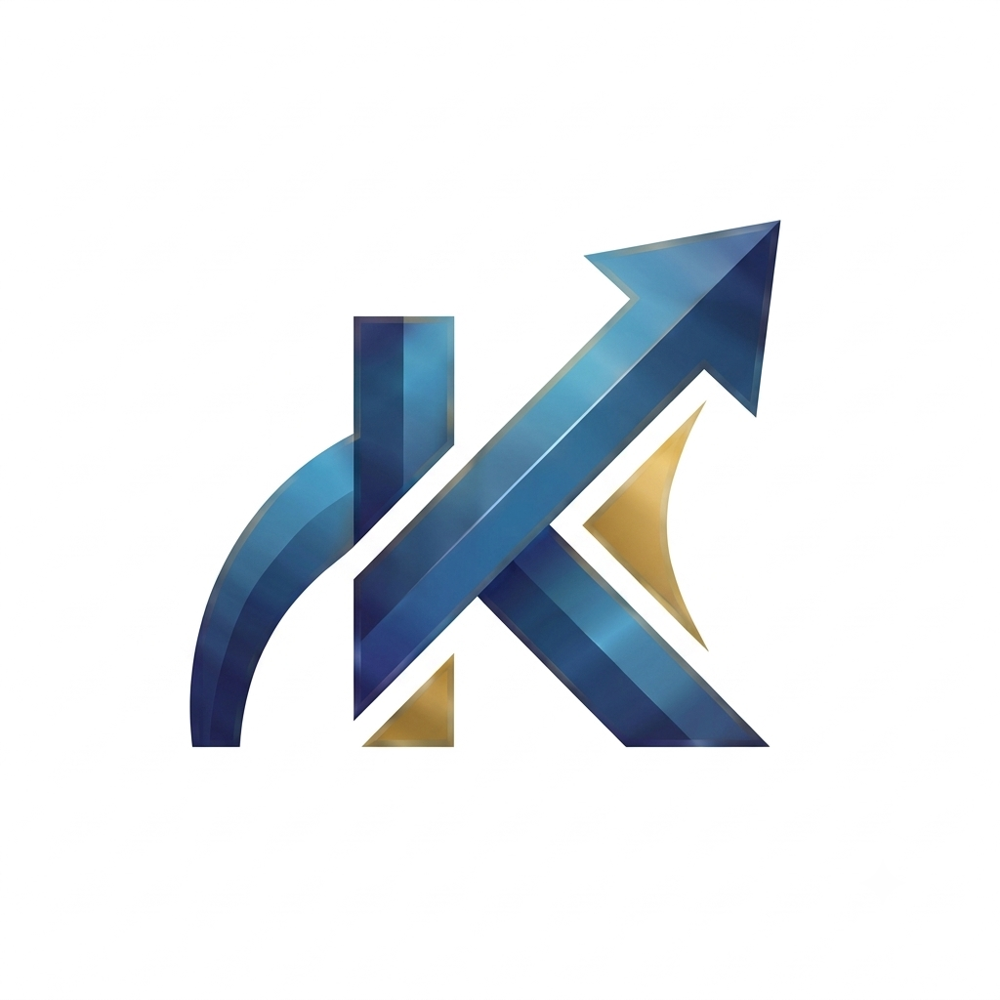

The visionary mastermind leading Kanha Yujalash Pvt. Ltd. With deep expertise in financial strategy and institutional alliances, he directs the company's grand vision to make Kanha Kredit the #1 loan app in India.
The pillar of operations. He ensures seamless ground-level execution, robust customer acquisition, and flawless operational management to keep the Kanha Kredit ecosystem running at peak performance.
The tech genius behind the app. He designs Kanha Kredit's highly secure, scalable architecture and AI integrations, ensuring that every user's digital journey is completely smooth, fast, and encrypted.
The financial guardian of the company. He manages vast portfolios, oversees corporate risk management, and drives robust collections and recovery strategies to ensure immense profitability and stability.